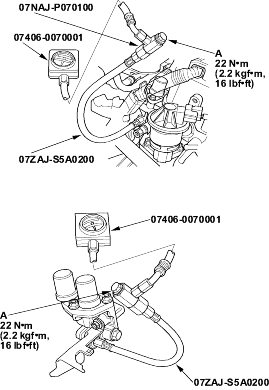

- Install the special tools as shown.

- Reconnect ECM/PCM connector B (24P) and the VTEC solenoid valve 1P (2P)* connector.
- Connect a tachometer.
- Start the engine. Hold the engine at 3.000 rpm with no load (in Park or neutral) until the radiator fan comes on.
- Check oil pressure at engine speeds of 1,000 and 2,000 rpm. Keep measuring time as short as possible because the engine is running with no load (less than 1 minute).
Is pressure below 49 kPa (0.5 kgf/cm2, 7 psi)?
YES |
- Go to step 19. |
NO |
- Inspect the VTEC solenoid valve (see page 11-277). |

- Turn the ignition switch OFF.
- Disconnect the VTEC solenoid valve 1P (2P)* connector.
- Attach the battery positive terminal to the VTEC solenoid 1P (2P)* valve terminal No. 1.
- Start the engine, and check oil pressure at an engine speed of 3,000 rpm.
Is pressure above 390 kPa (4.0 kgf/cm2, 57 psi)?
YES |
- Substitute a known-good ECM/PCM and recheck. If symptom/indication goes away, replace the original ECM/PCM. |
NO |
- Inspect the VTEC solenoid valve (see page 11-277). |